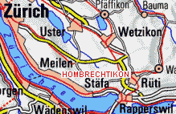
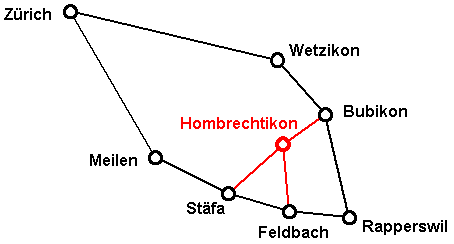

Privat:
Leila und Hans Märki-Bardales
Waffenplatzstrasse 26
8634 Hombrechtikon
Tel: 055 264 21 76
Waffenplatzstrasse 26
8634 Hombrechtikon
Tel: 076 306 45 18
Email:

Privat: |
Märki
Informatik Waffenplatzstrasse 26 8634 Hombrechtikon Tel: 076 306 45 18 Email: |


Name der Haltestelle, die man eingeben muss: Post Hombrechtikon
Es gibt drei Umsteigestationen von der Bahn auf den Bus:
Bubikon: Günstig, wenn man von Zürich oder von Rapperswil her kommt.
Feldbach: Günstig, wenn man von Zürich oder von Rapperswil her kommt. Nach 20 Uhr lange Wartezeiten beim Umsteigen.
Stäfa: Zu empfehlen nach 20 Uhr.